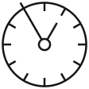

1 · Carbon Icons — primary
microscope
shield
target
tools
cost

time
launch
2 · Lucide — fallback when Carbon is missing the glyph
sun
menu
check-circle
message
grid
layers
settings
3 · Custom SVG / image gen — when neither pack has it
Custom SVG
Hand-built on 32px grid, 2px stroke, single
currentColor. Only when a specific concept (e.g. BoxBoat boat-mark) isn't in either pack.Image generation
For full illustrations or hero spots — the 3D matte-white sculptural renders that anchor IBM Consulting hero slides. Never for UI icons.
Priority: Carbon first (2,400+ glyphs, the canonical system). Fall back to Lucide for everyday UI glyphs Carbon lacks. Hand-build SVGs for brand-specific marks. Use image gen only for full illustrations — never as a substitute for a real icon.